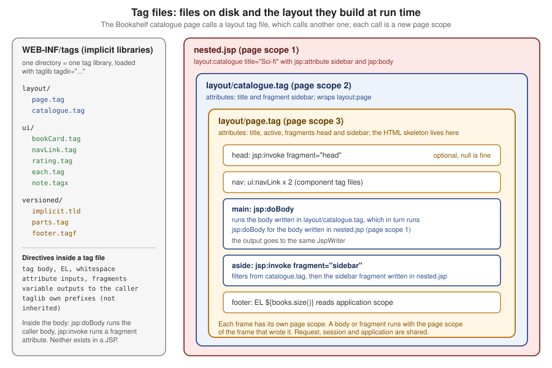

Tag Files & Layouts
|
This content was generated with the assistance of AI and should be verified against the official documentation before being relied on in production. |
This page is written against Jakarta Pages 4.0, Jakarta Expression Language 6.0, Jakarta Standard Tag Library 3.0 and Jakarta
Servlet 6.1, running on Apache Tomcat 11.0.26 and Java 21 with the JSTL implementation org.glassfish.web:jakarta.servlet.jsp.jstl
3.0.1. Everything was verified on 2026-10-08: the rules against chapters 1, 5 and 8 of the Pages 4.0 specification and the
Javadoc of JspFragment, SimpleTagSupport and DynamicAttributes, and every example by building it into a Maven WAR
(context path /g6tagfiles) and requesting it with curl on Tomcat 11.0.26; the outputs and error messages shown are the
ones that run produced (blank lines produced by the directives are removed from the listings). A tag file is a custom tag
written in JSP syntax: a page author who knows no Java packages a piece of markup, gives it typed attributes and a body, and
calls it with an XML-style element, <layout:page title="...">. Since JSP 2.0 the container must recognise tag files and
compile each one into a tag handler, so no tag library descriptor and no Java class is needed for the usual case. This page
covers where tag files live and how the container finds them, the three directives that describe a tag
(tag, attribute and variable), the two actions that exist only inside tag files (jsp:doBody and jsp:invoke), how a
tag file isolates its page scope and exchanges variables with its caller, dynamic attributes, tag files in XML syntax,
packaging in a JAR, and then the two things Bookshelf pages use them for: a layout template (the JSP answer to
Thymeleaf layouts and to Struts Tiles) and reusable components.
It builds on the includes and page composition page,
whose Pattern 4 points here, and on the directives page. The classic and simple tag
handlers written in Java, and their tag library descriptors and EL functions, have pages of their own in this part.
What a Tag File Is
A tag file is a source file with the extension .tag (JSP syntax) or .tagx (XML syntax) whose content is JSP: template
text, EL, standard and custom actions, and, if you insist, scriptlets. It differs from a JSP page in four ways. It is called
as a custom action, with attributes and an optional body. It has its own directives (tag, attribute, variable) instead of
page. It has two actions a page does not (jsp:doBody and jsp:invoke). And it has its own page scope, so nothing leaks in
or out unless the tag file declares it.
The specification leaves the implementation to the container: it may compile the file to a Java tag handler or interpret it,
as long as the observable behaviour is the same. Jasper in Tomcat 11 compiles each tag file to a class that extends
jakarta.servlet.jsp.tagext.SimpleTagSupport, which means a tag file is a simple tag handler whose doTag method contains
the translated body of the file. The generated source of WEB-INF/tags/ui/button.tag below was found in the work directory as
org/apache/jsp/tag/web/ui/button_tag.java (public final class button_tag extends SimpleTagSupport implements
DynamicAttributes), which is where to look when a tag file misbehaves; the build and the generated sources are described in
Compilation, Reloading and Where the Generated Code Is.
| Mechanism | What it shares | Parameters and body | Page scope |
|---|---|---|---|
|
Source text, merged at translation time |
None, the including page’s variables are visible |
Same as the page |
|
The output of another resource, at request time |
String parameters through |
Separate, a new request-level dispatch |
Tag file |
Markup and logic, compiled into a tag handler |
Typed attributes, fragments and a body, a declared set of variables out |
Separate, with explicit synchronization |
Simple or classic tag handler in Java |
Logic written in Java |
Attributes and body, described by a TLD |
Whatever the handler does |
Thymeleaf fragment or Tiles definition |
Markup of another engine |
See the other pages of this guide |
Not JSP |
Tag files are current and stable: they were added in JSP 2.0, gained deferred-expression attributes and implicit.tld in JSP
2.1, and the list of changes of the Pages 4.0 specification (Java 17 minimum) names nothing in their chapter. They are the right default for reusable markup
in a JSP application. They are not a good place for business logic or data access, and the Bookshelf follows that rule:
data comes from the servlet or a service, and a tag file only renders it.
The Bookshelf Used on This Page
The scratch application of this page is the Bookshelf of the getting started page
with the three books loaded by a ServletContextListener into the application attribute books. A Book is a record, and
EL 6 reads record components as properties (${book.title}).
package org.example.bookshelf;
public record Book(long id, String title, String author, int year, int rating) {
}The layout of the web application, with the tag files this page builds, is:
src/main/webapp
├── index.jsp, about.jsp, nested.jsp, tabs.jsp, sync.jsp, jar.jsp, implicit.jsp
└── WEB-INF
├── web.xml
├── lib/bookshelf-ui.jar tag files packaged in a JAR (META-INF/tags + a TLD)
└── tags
├── layout/page.tag the page skeleton
├── layout/catalogue.tag a layout built on layout/page.tag
├── ui/bookCard.tag, navLink.tag, rating.tag, each.tag, summary.tag
├── ui/button.tag, shout.tag, raw.tag, tabs.tag, note.tagx
├── sync/atbegin.tag, nested.tag, atend.tag, remove.tag
└── versioned/implicit.tld, hello-world.tag, parts.tag, footer.tagfThe diagram shows the idea of the whole page: the catalogue page calls a layout tag file, which calls another, and each call is a new page scope.

Where Tag Files Live and How They Are Found
The container recognises tag files in exactly two places: a directory tree under /WEB-INF/tags/ of the web application, or
a tree under /META-INF/tags/ of a JAR in /WEB-INF/lib/. Only files with the extension .tag or .tagx count; the
recommended extension for a segment included into a tag file is .tagf, the counterpart of .jspf. A tag file anywhere
else is not a tag extension, and the container treats it as content to be served.
| Location | How the page imports it | Notes |
|---|---|---|
|
|
An implicit tag library per directory, no descriptor needed. There is no relationship between a directory and its subdirectories. |
|
|
Needs a tag library descriptor with a |
|
As any library, through its |
A |
Anywhere else ( |
Not importable |
Served as plain content: see Security Notes. |
The tagdir attribute of the taglib directive must start with /WEB-INF/tags. A directory elsewhere is rejected when the
page is translated:
org.apache.jasper.JasperException: Tag file directory [/tags] does not start with "/WEB-INF/tags"
org.apache.jasper.JasperException: Tag file directory [/WEB-INF/tagz] does not start with "/WEB-INF/tags"A directory that exists but holds no tag of the requested name gives the usual message of any library:
org.apache.jasper.JasperException: /bad/no-tag-in-dir.jsp (line: [2], column: [0]) No tag [nothere] defined in tag library imported with prefix [b]The implicit tag library of a directory
For every directory under /WEB-INF/tags/ the container behaves as if a descriptor existed with a tlib-version of 1.0, a
short-name derived from the directory (the path below /WEB-INF/tags/ with every / replaced by -, or tags for the
root), and one tag-file element per file whose name is the file name without .tag or .tagx and whose path is the
file’s path from the web application root. Two consequences are worth remembering. The name of the file is the name of the
tag, so bookCard.tag is called <ui:bookCard> and hello-world.tag is called <v:hello-world> (a hyphen is allowed; a
space or a dot is not a good idea). And short names are not unique (/WEB-INF/tags/a-b/ and /WEB-INF/tags/a/b/ both give
a-b), which does not matter because the page chooses the prefix itself.
A .tagf segment is pulled into a tag file with the include directive. The example below also uses the file name with a
hyphen.
<%@ tag body-content="empty" %>
<%@ taglib prefix="c" uri="jakarta.tags.core" %>
hello with a hyphen; ${pageContext.request.method}<%@ tag body-content="empty" %>
<%@ include file="/WEB-INF/tags/versioned/footer.tagf" %><%@ page contentType="text/plain; charset=UTF-8" %>
<%@ taglib prefix="v" tagdir="/WEB-INF/tags/versioned" %>
<v:hello-world/>
<v:parts/>curl http://localhost:8080/g6tagfiles/implicit.jsphello with a hyphen; GET
included from a .tagf segmentimplicit.tld: the version of the library
The JSP version of an implicit library defaults to 2.0, which matters: the attributes introduced in JSP 2.1
(deferredValue, deferredValueType, deferredMethod, deferredMethodSignature) are a translation error in a tag file
whose library is still at version 2.0. A file named implicit.tld in the directory sets the library’s jsp-version and
tlib-version; the container ignores its short-name, rejects any other element, and rejects a jsp-version below 2.0.
Both directories below hold the same def.tag; only the second has an implicit.tld with jsp-version 4.0.
<?xml version="1.0" encoding="UTF-8"?>
<taglib xmlns="https://jakarta.ee/xml/ns/jakartaee"
xmlns:xsi="http://www.w3.org/2001/XMLSchema-instance"
xsi:schemaLocation="https://jakarta.ee/xml/ns/jakartaee https://jakarta.ee/xml/ns/jakartaee/web-jsptaglibrary_4_0.xsd"
version="4.0">
<tlib-version>2.3</tlib-version>
<jsp-version>4.0</jsp-version>
</taglib><%@ attribute name="v" deferredValue="true" %>
deferred okCalling <t:def v="#{x}"/> from each directory gives:
old/ : org.apache.jasper.JasperException: Invalid JSP version defined for tag file at [/WEB-INF/tags/old/def.tag]
new/ : deferred okIf a directory holds both a.tag and a.tagx, the specification says the library is invalid. Tomcat 11.0.26 does not
reject it: with a sameName.tag containing FROM-TAG and a sameName.tagx containing FROM-TAGX, the call printed
FROM-TAG. Do not rely on that.
A First Tag File: the Rating
The smallest useful tag file in the Bookshelf prints a rating. It has no body, one required attribute and one line of markup.
<%@ tag body-content="empty" pageEncoding="UTF-8" %>
<%@ attribute name="value" required="true" type="java.lang.Integer" %>
<span class="rating" title="${value} out of 5">${value} / 5</span><%@ taglib prefix="ui" tagdir="/WEB-INF/tags/ui" %>
<ui:rating value="${book.rating}"/><span class="rating" title="5 out of 5">5 / 5</span>Three things happened. The taglib directive with tagdir made every tag file of the directory available under the prefix
ui. The attribute directive declared value, so the call is checked when the page is translated, not when it runs: a
missing value or an unknown attribute stops the translation. And inside the tag file the attribute is a page-scoped
variable named value, so ${value} finds it with the normal EL search.
org.apache.jasper.JasperException: /bad/missing-attr.jsp (line: [2], column: [0]) According to the TLD or the tag file, attribute [label] is mandatory for tag [emptyTag]
org.apache.jasper.JasperException: /bad/unknown-attr.jsp (line: [2], column: [0]) Attribute [other] invalid for tag [emptyTag] according to TLDThe Directives of a Tag File
Table JSP.8-1 of the specification lists which directives a tag file may use: taglib and include behave as in a page,
tag, attribute and variable exist only in tag files (using them in a JSP is a translation error), and page is not
allowed in a tag file. The errors are:
/bad/tag-directive-in-jsp.jsp (line: [1], column: [8]) [<%@ tag] directive can only be used in a tag file
/bad/attr-directive-in-jsp.jsp (line: [1], column: [14]) [<%@ attribute] directive can only be used in a tag file
/WEB-INF/tags/bad/usesPage.tag (line: [1], column: [9]) [<%@ page] directive cannot be used in a tag fileThe tag directive
The tag directive describes the tag as a whole and is the tag file’s counterpart of the page directive: it may appear
more than once, its attributes apply to the whole file, a duplicate attribute with a different value is a translation error,
and an unrecognised attribute is a translation error.
| Attribute | Default | Meaning |
|---|---|---|
|
File name without extension |
Short name for tools. |
|
|
|
|
none |
Names a page-scoped variable that receives a |
|
none |
Paths of images for tools. |
|
none |
Free text for tools. |
|
|
As in the |
|
none |
As in the |
|
as for pages |
As in the |
|
as for pages |
As in the |
|
as for pages |
As in the |
|
as for pages |
As in the |
|
as for pages |
As in the |
A tag file is not governed by jsp-property-group elements of web.xml: the table says that isELIgnored,
errorOnELNotFound, pageEncoding, deferredSyntaxAllowedAsLiteral and trimDirectiveWhitespaces have no global
counterpart for tag files, as the configuration page
explains. The tag file has to say it itself.
<%@ tag description="A small star rating" body-content="empty" trimDirectiveWhitespaces="true" %>An invalid body-content fails when a page that uses the tag is translated:
org.apache.jasper.JasperException: /WEB-INF/tags/bad/bodyContent.tag (line: [1], column: [2]) Invalid body-content [JSP] in tag directiveThe attribute directive
The attribute directive is the tag file’s counterpart of the attribute element of a descriptor. Each attribute of the tag
is declared once; the declaration controls whether it is required, whether it accepts expressions, its Java type, and whether
it is a fragment.
| Attribute | Default | Meaning |
|---|---|---|
|
required |
The attribute’s name. Declaring the same name twice, or using the name of a |
|
|
Whether the caller must pass it. |
|
|
|
|
|
Whether the value may be an expression. Unlike the descriptor element, this defaults to |
|
|
The Java type of the value. A primitive type is an error by the specification. |
|
none |
Free text. |
|
|
The attribute is a deferred value expression ( |
|
|
The expected type of the expression result. |
|
|
The attribute is a deferred method expression. |
|
|
The signature of the method. |
The Bookshelf’s book card shows the usual declarations: a required attribute with a record type, an optional boolean, and a body.
<%@ tag description="One book as a card" body-content="scriptless" trimDirectiveWhitespaces="true" %>
<%@ taglib prefix="c" uri="jakarta.tags.core" %>
<%@ taglib prefix="ui" tagdir="/WEB-INF/tags/ui" %>
<%@ attribute name="book" required="true" type="org.example.bookshelf.Book" description="The book to show" %>
<%@ attribute name="highlight" type="java.lang.Boolean" description="Adds the featured class" %>
<article class="card${highlight ? ' featured' : ''}" id="book-${book.id}">
<h2><c:out value="${book.title}"/></h2>
<p><c:out value="${book.author}"/> (${book.year}) <ui:rating value="${book.rating}"/></p>
<div class="actions"><jsp:doBody/></div>
</article>Note that the tag file declares its own taglib directives: the c and ui prefixes of the calling page are not
inherited. Without a taglib for c, a line such as <c:out value="hello"/> in the tag file is not an error: it is
copied to the output as template text.
<c:out value="hello"/>How attribute values reach the tag file
An attribute that is not declared as a fragment or as a deferred expression becomes a page-scoped variable of the tag file
with the same name, set to the value passed in. An optional attribute that was not passed creates no variable, so EL sees
null. The value is converted to the declared type by the same rules as any attribute of a custom action, so passing a
string to an Integer attribute converts it and a bad string fails at run time:
<%@ attribute name="n" type="java.lang.Integer" %>
n=${n + 1}<b:typed n="41"/>
<b:typed n="abc"/>n=42
java.lang.NumberFormatException: For input string: "abc"Four rules about values deserve a table of their own.
| Situation | Result on Tomcat 11.0.26 | Cause |
|---|---|---|
|
|
Static attributes are constants of the page; this is also what protects |
|
A Java compiler error in the generated class ( |
The specification requires a translation error; use the wrapper type. |
A fragment attribute called with plain text ( |
|
A fragment is given with |
|
|
The type is fixed. |
Two |
|
Names are unique within a translation unit. |
The Body: scriptless, tagdependent, empty and jsp:doBody
The body-content of the tag directive says what the caller may put between the start and end tags.
| Value | What the caller may write | What the tag file sees |
|---|---|---|
|
Template text, EL, standard and custom actions; no scriptlets, declarations or scripting expressions |
A |
|
Anything; the container does not interpret it |
The body as text; |
|
Nothing |
No body; a body in the call is a translation error. |
jsp:doBody
jsp:doBody is available only in tag files (in a page it is a translation error). It runs the body of the call and sends its
output to the current JspWriter, or captures it. The body is a JspFragment evaluated in the page scope of the caller, which
is why a body written in a page sees the page’s variables but not the tag file’s.
| Attribute | Default | Meaning |
|---|---|---|
|
none |
Name of a scoped attribute that receives the output as a |
|
none |
Name of a scoped attribute that receives the output as a resettable |
|
|
|
If the call had no body, jsp:doBody behaves as if it had an empty one. An element with a non-empty body is a translation
error.
Capturing the body is how a tag transforms it. The shout tag upper-cases whatever its caller wrote, using a JSTL function.
<%@ tag body-content="scriptless" trimDirectiveWhitespaces="true" %>
<%@ taglib prefix="fn" uri="jakarta.tags.functions" %>
<jsp:doBody var="text"/>${fn:toUpperCase(text)}<%@ tag body-content="tagdependent" trimDirectiveWhitespaces="true" %>
<pre><jsp:doBody/></pre><layout:page title="About" active="about">
<p>A tiny catalogue. <ui:shout>loud</ui:shout></p>
<ui:note level="warn">Beta & <b>bold</b></ui:note>
<ui:raw>${notEvaluated} <b>x</b></ui:raw>
</layout:page>The relevant lines of the response of about.jsp:
<p>A tiny catalogue. LOUD</p>
<div class="note warn">Beta & <b>bold</b></div>
<pre>${notEvaluated} <b>x</b></pre>A scriptless body that contains a scriptlet is rejected, and a body in a call to an empty tag is too:
org.apache.jasper.JasperException: /bad/empty-body.jsp (line: [2], column: 0) According to TLD, tag [b:emptyTag] must be empty, but is notFragments: jsp:attribute, jsp:body and jsp:invoke
A fragment is a piece of JSP code, written by the caller, that the tag file can run zero or more times. The body of a tag
is one; a tag can also receive named fragments through attributes declared with fragment="true". The caller writes a
fragment attribute as a jsp:attribute child element, and when it does, the body has to be written inside jsp:body: the
text between the tags may not contain anything else.
<layout:page title="Catalogue" active="catalogue">
<jsp:attribute name="head"><link rel="stylesheet" href="${pageContext.request.contextPath}/bookshelf.css"></jsp:attribute>
<jsp:attribute name="sidebar"><p>Sidebar for ${books.size()} books</p></jsp:attribute>
<jsp:body>
<p>The body of the page.</p>
</jsp:body>
</layout:page>The mistake is to mix the two styles. With jsp:attribute present, text outside jsp:body is rejected:
<layout:page title="x">
<jsp:attribute name="head"><meta name="x" content="y"></jsp:attribute>
some text outside jsp:body
</layout:page>org.apache.jasper.JasperException: /bad/mixed-body.jsp (line: [4], column: [2]) Must use jsp:body to specify tag body for [<layout:page] if jsp:attribute is used.Source: Jakarta Pages 4.0 — 5.8 jsp:body
jsp:invoke
jsp:invoke runs a named fragment attribute, in tag files only. It takes the name of the attribute in fragment and the same
var, varReader and scope attributes as jsp:doBody. A fragment that the caller did not pass is null, and the
specification says jsp:invoke then behaves as if the fragment produced no output, which is why an optional head or
sidebar needs no test. The action must have no body.
| Attribute | Default | Meaning |
|---|---|---|
|
required |
The name of the fragment attribute. |
|
as for |
Capture the output as a |
The tabs tag below invokes a required fragment directly, captures an optional one with var, and declares a NESTED
variable so that each fragment knows which tab it is in. Naming an attribute that is not a fragment in jsp:invoke is not
detected by the translator: the generated class fails to compile with The method invoke(Writer) is undefined for the type
String.
<%@ tag body-content="empty" trimDirectiveWhitespaces="true" %>
<%@ attribute name="first" fragment="true" required="true" %>
<%@ attribute name="second" fragment="true" %>
<%@ variable name-given="tabNo" variable-class="java.lang.Integer" scope="NESTED" %>
<%@ taglib prefix="c" uri="jakarta.tags.core" %>
<c:set var="tabNo" value="1"/>
<section class="tab"><jsp:invoke fragment="first"/></section>
<c:set var="tabNo" value="2"/>
<jsp:invoke fragment="second" var="secondHtml"/>
<c:if test="${not empty secondHtml}"><section class="tab">${secondHtml}</section></c:if><%@ taglib prefix="ui" tagdir="/WEB-INF/tags/ui" %>
<ui:tabs>
<jsp:attribute name="first">first sees tab ${tabNo}</jsp:attribute>
<jsp:attribute name="second">second sees tab ${tabNo}</jsp:attribute>
</ui:tabs><section class="tab">first sees tab 1</section>
<section class="tab">second sees tab 2</section>Leaving out the required fragment is caught at translation time, as for any attribute:
org.apache.jasper.JasperException: /bad/missing-fragment.jsp (line: [2], column: [0]) According to the TLD or the tag file, attribute [first] is mandatory for tag [tabs]The fragment is an object (jakarta.servlet.jsp.tagext.JspFragment) whose single method invoke(Writer) writes the output
to the given writer, or to the JspWriter of the fragment’s context when the writer is null.
Variables: the variable Directive and Synchronization
A tag file exchanges values with its caller in two ways. IN parameters are attributes: a copy of the value is placed in the
tag’s page scope and nothing is written back. OUT parameters are variables declared with the variable directive: a
page-scoped variable of the tag file that the container copies to (or from) the calling page’s page scope at defined
moments.
| Attribute | Default | Meaning |
|---|---|---|
|
one of the two |
The fixed name of the variable in the caller and in the tag file. |
|
one of the two |
The name of an attribute whose value (a translation-time constant) is the variable’s name in the caller. That attribute must be a |
|
required with |
The local name in the tag file, for a variable whose name the caller chooses. |
|
|
The class of the variable. |
|
|
Whether a scripting variable is declared in the calling page after the tag. |
|
|
|
|
none |
Free text. |
The scope decides when the value crosses the boundary. In the table, "tag to page" means: if the variable exists in the tag file, create or update it in the caller; if it does not, remove it from the caller.
| Moment | AT_BEGIN | NESTED | AT_END |
|---|---|---|---|
Beginning of the tag file |
nothing |
save the caller’s value |
nothing |
Before any fragment (a body or a fragment attribute) |
tag to page |
tag to page |
nothing |
After any fragment |
nothing |
nothing |
nothing |
End of the tag file |
tag to page |
restore the caller’s value |
tag to page |
In practice: NESTED is a loop variable, visible only in the body and gone afterwards; AT_BEGIN is visible in the body and
after the tag; AT_END is a result visible only after the tag. The three tag files below set x to 2, run the body, set x
to 4, and each prints the value of x before and after the body. The page sets x to 1 and the body sets it to 3. The page
and the output are the ones of the specification’s examples, run on Tomcat 11.0.26.
<%@ variable name-given="x" scope="AT_BEGIN" %>
<%@ taglib prefix="c" uri="jakarta.tags.core" %>
inside before: [${x}]
<c:set var="x" value="2"/>
<jsp:doBody/>
inside after: [${x}]
<c:set var="x" value="4"/><%@ page contentType="text/plain; charset=UTF-8" %>
<%@ taglib prefix="c" uri="jakarta.tags.core" %>
<%@ taglib prefix="s" tagdir="/WEB-INF/tags/sync" %>
<c:set var="x" value="1"/>
before: [${x}]
<s:atbegin>
in body: [${x}]
<c:set var="x" value="3"/>
</s:atbegin>
after: [${x}]== AT_BEGIN
before: [1]
inside before: []
in body: [2]
inside after: [2]
after: [4]
== NESTED
before: [1]
inside before: []
in body: [2]
inside after: [2]
after: [1]
== AT_END
before: [1]
inside before: []
in body: [1]
inside after: [2]
after: [4]Read the output once, slowly. In AT_BEGIN the body sees the tag’s x (2) because the value is copied before the body, and
the page sees the tag’s final value (4) at the end. In NESTED the body sees 2 too, but after the tag the page’s own x (1)
is back. In AT_END the body still sees the page’s x (1); only after the tag does the page see 4. The body’s own <c:set
var="x" value="3"/> (the "3") is never copied back in any scope: the value flows from the tag file to the page, not the other
way.
A fourth example from the specification shows that the synchronization can remove a variable: a NESTED variable that the tag
file sets, calls the body, removes with c:remove, and calls the body again.
<%@ variable name-given="x" scope="NESTED" %>
<%@ taglib prefix="c" uri="jakarta.tags.core" %>
<c:set var="x" value="1"/>
<jsp:doBody/>
<c:remove var="x"/>
<jsp:doBody/>Called as <s:remove>'${x}'</s:remove> after x was set to 2, the output is 2, '1', '' and 2 again: the body saw 1,
then nothing (the variable was removed from the caller), and the page’s own 2 returned at the end.
A variable whose name the caller chooses: each
JSTL’s c:forEach takes var and varStatus as attribute names; a tag file does the same with name-from-attribute and
alias. The each tag repeats its body for every element of a collection and exposes the element and its index as NESTED
variables with the names the caller picked.
<%@ tag description="Repeats the body for every element" body-content="scriptless" %>
<%@ attribute name="items" required="true" type="java.util.Collection" %>
<%@ attribute name="var" required="true" rtexprvalue="false" description="Name of the current element" %>
<%@ attribute name="varIndex" required="true" rtexprvalue="false" description="Name of the zero-based index" %>
<%@ variable name-from-attribute="var" alias="current" variable-class="java.lang.Object" scope="NESTED" %>
<%@ variable name-from-attribute="varIndex" alias="position" variable-class="java.lang.Integer" scope="NESTED" %>
<%@ taglib prefix="c" uri="jakarta.tags.core" %>
<c:forEach var="item" items="${items}" varStatus="st">
<c:set var="current" value="${item}"/>
<c:set var="position" value="${st.index}"/>
<jsp:doBody/>
</c:forEach><ui:each items="${books}" var="b" varIndex="i">
<ui:bookCard book="${b}" highlight="${i == 0}">
<ui:button kind="submit" class="borrow" data-id="${b.id}">Borrow</ui:button>
</ui:bookCard>
</ui:each>Inside the tag file the code uses the fixed names current and position; in the page the same values are b and i. The
attribute behind name-from-attribute must be required and not an rtexprvalue: leaving required="true" out of
varIndex makes Tomcat refuse the library.
org.apache.jasper.JasperException: /WEB-INF/tags/ui/each.tag (line: [6], column: [1]) The attribute directive declared at line [4] with name [varIndex] that matches the name-from-attribute value of this variable directive must be of type java.lang.String, must be "required" and must not be a "rtexprvalue".An AT_END variable gives a tag a result, the way c:set does for var. The summary tag computes a text from a collection
and hands it back under the name the page asks for:
<%@ tag body-content="empty" %>
<%@ attribute name="items" required="true" type="java.util.Collection" %>
<%@ attribute name="var" required="true" rtexprvalue="false" %>
<%@ variable name-from-attribute="var" alias="result" variable-class="java.lang.String" scope="AT_END" %>
<%@ taglib prefix="c" uri="jakarta.tags.core" %>
<c:set var="result" value="${items.size()} book(s)"/><ui:summary items="${books}" var="total"/>
<p>${total}</p><p>3 book(s)</p>Page Scope, Implicit Objects and EL Inside a Tag File
Every call of a tag file gets a clean page scope: it holds the declared attributes and nothing else. The request, session
and application scopes are the caller’s own, and a change to them is visible to the caller. A change to the page scope is not
visible, except through a variable. The tag’s context object (the "JSP context wrapper") is what getJspContext() returns, and
it is a PageContext when the caller’s context is one.
| Variable | Type | Notes |
|---|---|---|
|
|
The request, request scope. |
|
|
The response. |
|
|
The context of the tag file; replaces |
|
|
HTTP only; session scope. |
|
|
Application scope. |
|
|
Writes to the output. |
|
|
These are scripting variables, available in scriptlets and scripting expressions of the tag file. They are not EL
identifiers: the EL implicit objects (pageContext, param, requestScope…) are those of the implicit objects page. The tag file below prints values from both worlds.
<%@ taglib prefix="c" uri="jakarta.tags.core" %>
caller page var: [${pageScope.callerVar}] request var: [${requestScope.reqVar}]
jspContext: ${jspContext.getClass().getSimpleName()}
request: ${request.method} contextPath=${pageContext.request.contextPath}
<c:set var="leak" value="from the tag"/><%@ page session="false" %>
<%@ taglib prefix="b" tagdir="/WEB-INF/tags/bad" %>
<%@ taglib prefix="c" uri="jakarta.tags.core" %>
<c:set var="callerVar" value="in the page" scope="page"/>
<c:set var="reqVar" value="in the request" scope="request"/>
<b:pageScope/>
after the tag, leak=[${leak}] callerVar=[${callerVar}]caller page var: [] request var: [in the request]
jspContext:
request: contextPath=/g6tagfiles
after the tag, leak=[] callerVar=[in the page]The result confirms four things. The tag file does not see the caller’s page-scoped variable; it sees the request-scoped one.
${jspContext...} and ${request.method} are empty, because they are scripting variables and not EL names (a missing EL
variable is not an error unless errorOnELNotFound is on). ${pageContext.request.contextPath} works: EL’s
pageContext is available in a tag file. And what the tag stores in its own page scope (leak) is gone
once the tag ends.
A tag file can contain scriptlets, even though its callers' bodies cannot (body-content="scriptless" governs the caller’s
body). A <% out.print("scriptlet"); %> in bad/scriptlet.tag printed scriptlet. Property groups,
including scripting-invalid, never apply to tag files (see the configuration page),
so a project that bans scriptlets should also search WEB-INF/tags for <% in code review.
Dynamic Attributes
The dynamic-attributes attribute of the tag directive turns on the acceptance of attributes the tag did not declare. It
names a page-scoped variable that receives a Map of names to values; the generated handler implements
jakarta.servlet.jsp.tagext.DynamicAttributes, and the container must not reject any name. Only attributes without a
namespace URI are in the map.
<%@ tag body-content="scriptless" dynamic-attributes="extra" %>
<%@ taglib prefix="c" uri="jakarta.tags.core" %>
<%@ attribute name="kind" %>
<button type="${empty kind ? 'button' : kind}"<c:forEach var="a" items="${extra}"> ${a.key}="<c:out value='${a.value}'/>"</c:forEach>><jsp:doBody/></button><ui:button kind="submit" class="borrow" data-id="7">Borrow</ui:button><button type="submit" data-id="7" class="borrow">Borrow</button>The map is a hash map, so the order of data-id and class is not the order written. The values are escaped with c:out:
a dynamic attribute is request data the moment it comes from an expression.
A tag that does not declare dynamic-attributes is strict: <ui:rating value="1" extra="no"/> stops the translation with
Attribute [extra] invalid for tag [rating] according to TLD.
trimDirectiveWhitespaces can eat the space you need
With trimDirectiveWhitespaces="true" the container removes template text that consists only of whitespace. In the button
tag the text before ${a.key} is a single space, and an expression splits the template text into pieces, so the space is a
whitespace-only piece and is removed. The output of the same tag with the directive set to true:
<button type="submit"data-id="7"class="borrow">Borrow</button>That is invalid HTML attribute spacing that browsers tolerate unpredictably. Either leave the directive out for such a tag, or write the space as an expression or entity that is not whitespace-only template text.
Tag Files in XML Syntax
A tag file whose extension is .tagx is in XML syntax, like a JSP document: it must be well formed, the jsp:root element may
be present (in a .tag it may not), directives become jsp:directive.tag, jsp:directive.attribute and
jsp:directive.variable, and the default is not to generate an XML declaration. A pageEncoding attribute in the tag
directive of a .tagx is an error: the encoding follows the XML rules. If jsp:root carries a version, it must match the tag
file’s JSP version. The JSP documents page covers the XML syntax in
general.
<jsp:root xmlns:jsp="http://java.sun.com/JSP/Page" xmlns:c="jakarta.tags.core" version="4.0">
<jsp:directive.tag body-content="scriptless" description="A note box in XML syntax"/>
<jsp:directive.attribute name="level" required="false"/>
<div class="note ${empty level ? 'info' : level}"><jsp:doBody/></div>
</jsp:root>It is called like any other tag; the call <ui:note level="warn">Beta & <b>bold</b></ui:note> gives
<div class="note warn">Beta & <b>bold</b></div>. The XML view of a tag file, the form passed to tag library
validators, is built the same way as for a page.
Packaging Tag Files in a JAR
To reuse tag files across applications, put them in a JAR under /META-INF/tags/ and describe them in a tag library
descriptor in the same JAR. A tag file in a JAR that no descriptor lists is ignored. The descriptor’s tag-file element has a
name and a path, which must start with /META-INF/tags; other elements of the element override the defaults of the file’s
tag directive. A library can mix tag (Java) and tag-file elements, and both share one namespace of names, so a
duplicate name makes the library invalid. The JSP version of a tag file in a JAR is the version of the descriptor.
<?xml version="1.0" encoding="UTF-8"?>
<taglib xmlns="https://jakarta.ee/xml/ns/jakartaee"
xmlns:xsi="http://www.w3.org/2001/XMLSchema-instance"
xsi:schemaLocation="https://jakarta.ee/xml/ns/jakartaee https://jakarta.ee/xml/ns/jakartaee/web-jsptaglibrary_4_0.xsd"
version="4.0">
<description>Reusable Bookshelf components packaged as tag files</description>
<tlib-version>1.0</tlib-version>
<short-name>bsui</short-name>
<uri>https://example.org/bookshelf/ui</uri>
<tag-file>
<name>badge</name>
<path>/META-INF/tags/badges/badge.tag</path>
</tag-file>
</taglib><%@ tag body-content="scriptless" description="A small label" trimDirectiveWhitespaces="true" %>
<%@ attribute name="tone" description="info, ok or warn" %>
<span class="badge ${empty tone ? 'info' : tone}"><jsp:doBody/></span>jar cf src/main/webapp/WEB-INF/lib/bookshelf-ui.jar -C jarsrc META-INF<%@ taglib prefix="bsui" uri="https://example.org/bookshelf/ui" %>
<p>Status: <bsui:badge tone="ok">on loan</bsui:badge></p><p>Status: <span class="badge ok">on loan</span></p>Jasper compiled the tag into org/apache/jsp/tag/meta/... of the work directory, a separate tree from the tag/web/... of
tag files in the web application. Tomcat finds the descriptor by scanning the JARs of WEB-INF/lib for TLD files, as the
Tomcat JAR scanner page describes.
A third form, tag files compiled into Java classes and distributed as a binary tag library, is allowed but needs a tool that produces portable code; containers are not required to supply one. Precompiling with JspC at build time is a matter for the Jasper Configuration & Precompilation.
A Layout Template with Tag Files
Every page of the Bookshelf has the same skeleton: a head, a navigation bar, a main area, an optional second column and a footer. In JSP the clean way to write that skeleton once is a tag file whose body is the page content and whose optional fragments fill the other slots. This is the pattern called Composite View, which the JSP world also implemented with Tiles and SiteMesh, and which Thymeleaf calls a layout.
<%@ tag description="Bookshelf page layout" body-content="scriptless" trimDirectiveWhitespaces="true" %>
<%@ taglib prefix="c" uri="jakarta.tags.core" %>
<%@ taglib prefix="ui" tagdir="/WEB-INF/tags/ui" %>
<%@ attribute name="title" required="true" description="Text of the title element" %>
<%@ attribute name="active" description="Name of the current menu entry" %>
<%@ attribute name="head" fragment="true" description="Extra markup for the head element" %>
<%@ attribute name="sidebar" fragment="true" description="Optional second column" %>
<!DOCTYPE html>
<html lang="en">
<head>
<meta charset="UTF-8">
<title><c:out value="${title}"/> - Bookshelf</title>
<jsp:invoke fragment="head"/>
</head>
<body>
<nav>
<ui:navLink href="${pageContext.request.contextPath}/index.jsp" label="Catalogue" current="${active == 'catalogue'}"/>
<ui:navLink href="${pageContext.request.contextPath}/about.jsp" label="About" current="${active == 'about'}"/>
</nav>
<main>
<jsp:doBody/>
</main>
<aside><jsp:invoke fragment="sidebar"/></aside>
<footer>Bookshelf, ${books.size()} titles</footer>
</body>
</html><%@ tag body-content="empty" trimDirectiveWhitespaces="true" %>
<%@ taglib prefix="c" uri="jakarta.tags.core" %>
<%@ attribute name="href" required="true" %>
<%@ attribute name="label" required="true" %>
<%@ attribute name="current" type="java.lang.Boolean" %>
<a href="<c:out value='${href}'/>"${current ? ' class="current" aria-current="page"' : ''}><c:out value="${label}"/></a>The design decisions are all visible in that file. The page-specific content comes in through jsp:doBody. The optional
slots are fragment attributes invoked with jsp:invoke, which does nothing for a slot the page did not fill. Everything the
layout reads from the model comes from a scope (here books from application scope); a layout that needs a variable the page
sets should ask for it as an attribute instead, since the caller’s page scope is not visible. The title is escaped with
c:out because it is data. The navigation uses a component tag file (ui:navLink), a tag file calling a tag file from another
directory through its own taglib directive.
A page uses the layout by wrapping its content:
<%@ page contentType="text/html; charset=UTF-8" session="false" %>
<%@ taglib prefix="c" uri="jakarta.tags.core" %>
<%@ taglib prefix="layout" tagdir="/WEB-INF/tags/layout" %>
<%@ taglib prefix="ui" tagdir="/WEB-INF/tags/ui" %>
<layout:page title="Catalogue" active="catalogue">
<jsp:attribute name="head"><link rel="stylesheet" href="${pageContext.request.contextPath}/bookshelf.css"></jsp:attribute>
<jsp:attribute name="sidebar"><p>Sidebar for ${books.size()} books</p></jsp:attribute>
<jsp:body>
<ui:each items="${books}" var="b" varIndex="i">
<ui:bookCard book="${b}" highlight="${i == 0}">
<ui:button kind="submit" class="borrow" data-id="${b.id}">Borrow</ui:button>
</ui:bookCard>
</ui:each>
<ui:summary items="${books}" var="total"/>
<p>${total}</p>
</jsp:body>
</layout:page>curl http://localhost:8080/g6tagfiles/index.jsp<!DOCTYPE html>
<html lang="en">
<head>
<meta charset="UTF-8">
<title>Catalogue - Bookshelf</title>
<link rel="stylesheet" href="/g6tagfiles/bookshelf.css"></head>
<body>
<nav>
<a href="/g6tagfiles/index.jsp" class="current" aria-current="page">Catalogue</a>
<a href="/g6tagfiles/about.jsp">About</a>
</nav>
<main>
<article class="card featured" id="book-1">
<h2>Neuromancer</h2>
<p>William Gibson (1984)
<span class="rating" title="5 out of 5">5 / 5</span>
</p>
<div class="actions">
<button type="submit" data-id="1" class="borrow">Borrow</button>
</div>
</article>
<article class="card" id="book-2">
<h2>Dune</h2>
...
<p>3 book(s)</p>
</main>
<aside><p>Sidebar for 3 books</p></aside>
<footer>Bookshelf, 3 titles</footer>
</body>
</html>The <head> fragment is optional: the about.jsp page of the application passes none and its response simply has an empty
aside and no extra head markup.
Layouts built on layouts
A layout can wrap another layout, which is the JSP form of Tiles definition inheritance. The catalogue layout adds a section
element around the body and a fixed "Filters" block in front of whatever sidebar the page supplies; it forwards its own
sidebar fragment to layout:page by invoking it inside a jsp:attribute.
<%@ tag description="Catalogue layout built on the page layout" body-content="scriptless" trimDirectiveWhitespaces="true" %>
<%@ taglib prefix="layout" tagdir="/WEB-INF/tags/layout" %>
<%@ attribute name="title" required="true" %>
<%@ attribute name="sidebar" fragment="true" %>
<layout:page title="${title}" active="catalogue">
<jsp:attribute name="sidebar"><div class="filters">Filters</div><jsp:invoke fragment="sidebar"/></jsp:attribute>
<jsp:body><section class="catalogue"><jsp:doBody/></section></jsp:body>
</layout:page><%@ page contentType="text/html; charset=UTF-8" session="false" %>
<%@ taglib prefix="layout" tagdir="/WEB-INF/tags/layout" %>
<layout:catalogue title="Sci-fi">
<jsp:attribute name="sidebar"><p>Page-specific sidebar</p></jsp:attribute>
<jsp:body><p>Three books.</p></jsp:body>
</layout:catalogue><main>
<section class="catalogue"><p>Three books.</p></section></main>
<aside><div class="filters">Filters</div><p>Page-specific sidebar</p></aside>Inside catalogue.tag the tag sidebar that jsp:invoke names is the attribute of catalogue.tag itself, even though
layout:page also has a sidebar: the two are in different page scopes. The diagram at the top of the page is this call.
Layout tag files, includes, Tiles and Thymeleaf
| Approach | How the skeleton is shared | Trade-offs |
|---|---|---|
Header and footer includes |
Each page includes |
Simple; the skeleton is repeated in every page and the order is the page’s job. See the includes page. |
|
A property group adds a prelude and a coda to every page of a pattern |
No page change; invisible, no per-page parameters. See the configuration page. |
A layout page and |
The layout page includes the content page named by a parameter |
Content is a whole page, parameters are strings, and the page scope is not shared. See the includes page. |
Layout tag file |
The page wraps its content in a tag, with fragments for optional slots |
Typed attributes, body, nested layouts, compile-time checking of the call; the content stays in the page that owns it. Pure JSP. |
Apache Tiles |
A definition file composes pages with |
Retired by the Apache Attic. Struts 7.4 still ships the plugin; see Tiles & Page Layouts in Part II. A layout tag file replaces most uses. |
Thymeleaf layouts |
A native fragment mechanism or the Layout Dialect decorates a page |
Another template engine entirely, see Layouts & the Layout Dialect. |
Source: Apache Attic — Apache Tiles
Source: Thymeleaf Layout Dialect
A reader who knows Tiles can translate its vocabulary one to one.
| Tiles (Struts 1 and 2) | Tag file |
|---|---|
A layout JSP that inserts attributes at named slots |
|
|
A call |
|
|
|
An |
A definition that extends another |
A layout tag file that wraps another ( |
A definition used as a forward target |
A servlet or an action forwards to a JSP under |
Composite View (the pattern) |
The layout tag plus its fragments |
The older books of this section’s bibliography build a "channel" layout with c:import: a portal page includes survey,
message-board and news channels, each a separate page, and the case study of the JSTL book keeps database and RSS access in
those pages, with registration, login and a personalised welcome on top. The same result is better reached with a layout tag
file for the frame (the navigation can read the signed-in reader from the session and show the login or the logout link),
component tag files for the survey, the message board and each channel, and the data loaded by a servlet or a service before
the view runs; a view that queries a database or fetches a
feed belongs to the era the book describes, and is called out on the
includes page and in MVC with Servlets & JSP.
Reusable Components
A component tag file renders one concept of the application: a book card, a rating, a navigation link, a form field. The same rules produce good ones.
-
Take typed attributes (
bookof typeBook, not three strings) and a body for content the caller owns. -
Read nothing from the request that the caller did not pass, except the context path or other genuinely global values.
-
Escape every value with
c:outorfn:escapeXml: the tag file is the single place where the escaping is written. -
Give optional behaviour a name (
highlight), not a flag of unrelated meanings. -
Keep logic to presentation. A loop that decides nothing is fine; a query, a transaction or a permission check is not.
-
Put each directory of related tags under one prefix (
ui,layout,form), and keep the names short and in the camel case or hyphenated style the project agrees on.
The Bookshelf’s ui directory shows the range: rating (no body, one attribute), navLink (no body, a boolean), bookCard
(typed attribute, boolean, body), each (collection, two named variables), summary (an AT_END result), button
(dynamic attributes), shout and raw (body transformation) and note (XML syntax).
Worked Example: the Bookshelf Catalogue End to End
The pieces assembled: the servlet or listener puts the books in a scope, the page calls the layout, the layout renders the
skeleton, and component tags render the cards. The call chain for one request of index.jsp is: Jasper translates and compiles
index.jsp, then each tag file it uses (layout/page.tag, ui/each.tag, ui/bookCard.tag, ui/rating.tag, ui/button.tag,
ui/summary.tag, ui/navLink.tag) the first time it is reached. At run time layout:page receives three things from the
page: the attributes title and active, the two fragments head and sidebar, and the body. It writes the head, calls
navLink twice, runs the body (which calls each, which for every book runs its own body, which calls bookCard, whose body
is the button), and finally the aside and the footer. summary sets total once, at the end of its call, and the paragraph
that follows prints it.
# edit the deployed rating.tag, then ask for a page that uses it
sed -i '' 's|</span>|</span><!-- v2 -->|' webapps/g6tagfiles/WEB-INF/tags/ui/rating.tag
sleep 6
curl -s http://localhost:8080/g6tagfiles/index.jsp | grep -c 'v2'3The three matches are the three ratings of the three cards. A change to the layout file (<footer> to <footer data-v="2">)
showed in index.jsp and in about.jsp six seconds later, so a tag file edit reaches every page that uses it.
Compilation, Reloading and Where the Generated Code Is
Jasper translates a tag file to Java the first time a page that uses it is translated, compiles it, and keeps the class in the
web application’s work directory: org/apache/jsp/tag/web/<directory>/<name>_tag.java and .class for a file in
WEB-INF/tags, and org/apache/jsp/tag/meta/<uri>/... for a file in a JAR. The generated class extends SimpleTagSupport;
its setJspContext creates the JspContextWrapper that holds the clean page scope and the variable synchronization state,
and doTag calls syncBeforeInvoke before it invokes the body.
In development mode (the default, development is true) Jasper checks a page and its dependent files for modification at
most once per modificationTestInterval (4 seconds by default), and the tag files a page uses are among its dependents, as
the reload test above showed. In production mode (development false) the pages and tag files are checked at the
checkInterval or never, and precompiling with JspC removes the first-request cost. Compile errors name the tag file and
line, as in the messages of this page, and runtime errors from EL name the tag file too:
jakarta.el.PropertyNotFoundException: Property [isbn] not found on type [org.example.bookshelf.Book]
org.apache.jasper.JasperException: An exception occurred processing [/WEB-INF/tags/bad/missingprop.tag] at line [2]Security Notes
-
Tag file source is a secret like any JSP. Tag files in
/WEB-INF/tagscannot be requested by a client. A tag file anywhere else is just content: aleak.tagcontaining<%@ attribute name="x" %> SECRET-TAG-SOURCE ${x}in the web application root (/tags/leak.tag) was served as is, source and${x}unexpanded, with status 200. Keep tag files underWEB-INF/tagsorMETA-INF/tags, always. -
A tag file renders; it does not authorise. Escape attribute values in the tag file with
c:out, as the cards do. Do not rely on the caller to escape. Output ofjsp:doBody var="x"andjsp:invoke var="x"is already markup, so printing${x}unescaped re-emits whatever the caller’s body contained; escape only values, not captured markup. -
Dynamic attributes are open input. Names and values of a dynamic attribute may come from a request; the
buttontag escapes values, and a tag that writes attribute names from request data is an injection point. -
Static attributes are constants. A
name-from-attributeorrtexprvalue="false"attribute cannot take${param.x}; that is a feature, since it fixes the names of scoped variables at translation time. -
Property groups such as
scripting-invaliddo not apply to tag files. ReviewWEB-INF/tagsfor scriptlets separately. -
A shared tag JAR runs with the application’s privileges, like any library. Prefer tag files from sources you build.
Pitfalls and Error Names
| Mistake | Symptom | Fix |
|---|---|---|
A tag file outside |
The file is served as content; |
Move it under |
|
|
Use the |
|
|
They exist only in tag files. |
|
|
Use them in a tag file. |
|
|
|
A body in a call to an |
|
Remove the body or change |
A required attribute left out, or an unknown attribute |
|
Declare it; or add |
A fragment attribute given as text |
|
Use |
Text outside |
|
Wrap the body in |
|
|
Drop the |
A primitive |
A javac error from the generated class, not a clean message |
Use the wrapper type. |
|
|
Declare the attribute |
Using the caller’s |
|
Repeat the |
Expecting the caller’s page-scoped variables |
|
Pass them as attributes, or use request scope. |
Expecting a tag file’s |
The variable is gone after the tag |
Declare a |
|
Empty |
Use |
|
|
Remove the directive, or avoid a whitespace-only template piece. |
A property that does not exist on the typed attribute |
|
Fix the property name; the message names the tag file. |
|
|
Add an |
|
Invalid by the specification; Tomcat silently used the |
Do not. |
A scriptlet in a tag file, assuming a property group forbids it |
The scriptlet ran; property groups do not apply to tag files |
Search tag files in review. |
What Changed Recently
| Version | Change |
|---|---|
JSP 2.0 (2003) |
Tag files, |
JSP 2.1 (2006) |
|
Jakarta Pages 3.0 (Jakarta EE 9) |
The package moved from |
Jakarta Pages 3.1 (Jakarta EE 10) |
An option to raise a |
Jakarta Pages 4.0 (Jakarta EE 11) |
Java 17 minimum, |
Where the Books Are Outdated
The Pages and JSTL books of the bibliography are from the JSP 1.2 era, which predates tag files. The JSP 1.2 book builds
custom tags only as classic Tag and BodyTag handlers in Java with a JSP 1.2 TLD DTD, and has nothing like jsp:doBody or a
page scope for a tag; the JSTL book evaluates EL in custom tag attributes by hand with an ExpressionEvaluatorManager, and
builds its portal layout with c:import. Everything the books do with those tools is today either an EL expression, a tag
file or a simple tag handler. The Struts books use Tiles for layouts, with tiles:insert and definition inheritance;
a layout tag file expresses the same composition with jsp:attribute and nested layouts, and Tiles itself has been retired.
Where the books use a custom tag to reach a database or a feed, the modern answer is to load data before the view.